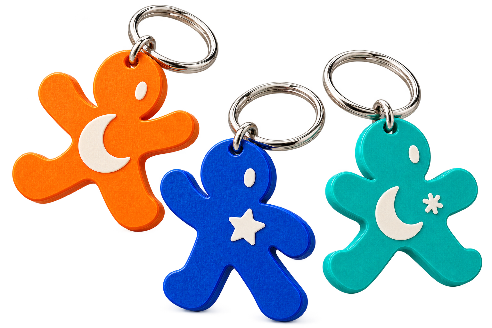
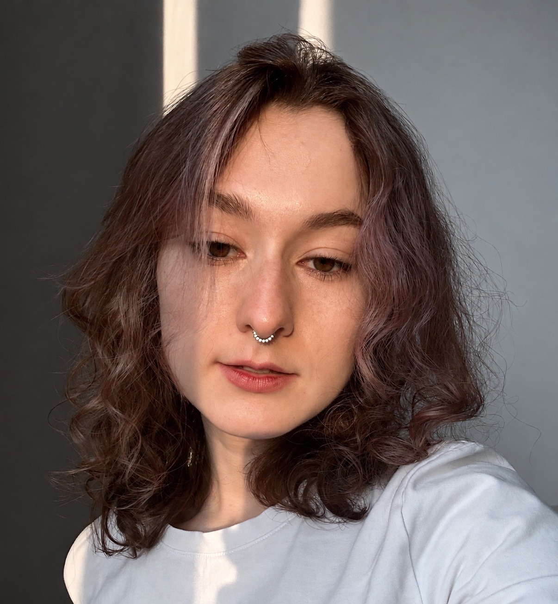

Серафима
Веселова.
Графический и моушн-дизайнер. Создаю айдентику, визуальные коммуникации, иллюстрации и видео.


СЕРАФИМА ВЕСЕЛОВА / МОСКВАПривет!
Я графический и моушн-дизайнер, окончила Школу дизайна НИУ ВШЭ по направлению «Коммуникационный дизайн». Начинала с современного искусства — это научило меня искать неожиданные образы и не бояться экспериментов.
Создаю айдентику, визуальные коммуникации, иллюстрации и видео. Люблю разбираться в механике движения — от пластики отдельного элемента до ритма целого ролика.
Работала с художниками, галереями и брендами. Умею координировать процессы: искать партнёров, организовывать логистику и доводить задачи до результата. Уверенно работаю и самостоятельно, и в команде.
Избранные
проекты.
Showreel.
Лучшие работы и мой диапазон: от айдентики и иллюстрации до моушн-графики.